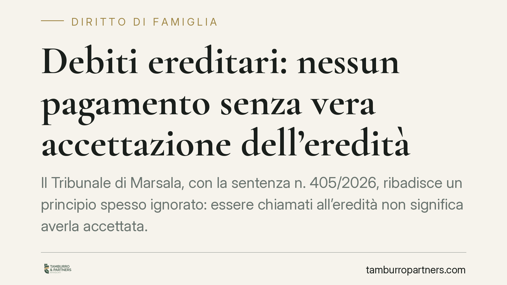

Debiti ereditari: nessun pagamento senza vera accettazione dell'eredità
Il Tribunale di Marsala, con la sentenza n. 405/2026, ribadisce un principio spesso ignorato: essere chiamati all'eredità non significa averla accettata. Senza accettazione, i debiti del defunto non passano ai familiari. E la prova dell'accettazione spetta al creditore, non al chiamato. Vediamo cosa cambia in concreto per coniuge e figli conviventi.

Il caso deciso a Marsala
Un creditore agisce nei confronti dei familiari di una persona defunta per ottenere il pagamento di un debito. La tesi è semplice: sono eredi, quindi devono rispondere. Il Tribunale di Marsala respinge la pretesa, chiarendo un punto che genera continui equivoci.
Essere "chiamato all'eredità" e essere "erede" sono due cose diverse. Il chiamato è chi ha titolo per accettare (per legge o per testamento). Erede diventa solo chi accetta. Fino a quel momento, i debiti del defunto restano estranei al patrimonio del familiare.
Inquadramento normativo
Il principio poggia su alcune norme del Codice civile.
L'art. 481 c.c. consente a chiunque vi abbia interesse (tipicamente il creditore) di chiedere al giudice di fissare un termine entro cui il chiamato deve dichiarare se accetta o rinuncia (la cosiddetta *actio interrogatoria*). È uno strumento pensato proprio per superare l'incertezza: se il creditore vuole aggredire l'eredità, ha modo di provocare una scelta.
L'art. 485 c.c. regola la posizione del chiamato che si trova nel possesso dei beni ereditari: entro tre mesi deve fare l'inventario, altrimenti è considerato erede puro e semplice. Ma – ed è il cuore della decisione – occorre un possesso reale e qualificato dei beni del defunto, non la semplice presenza in un immobile.
Infine l'art. 2697 c.c. distribuisce l'onere della prova: chi vuol far valere un diritto in giudizio deve provarne i fatti costitutivi. Se il creditore sostiene che il familiare è erede, tocca a lui dimostrare l'accettazione. Non è il familiare a dover provare di non aver accettato.
Cosa dice davvero la sentenza
Il punto più rilevante riguarda l'accettazione tacita. L'accettazione può avvenire anche senza dichiarazione formale, quando il chiamato compie un atto che presuppone necessariamente la volontà di accettare e che non avrebbe il diritto di compiere se non come erede (art. 476 c.c.).
Il Tribunale esclude che la permanenza del coniuge superstite e dei figli conviventi nella casa familiare integri un possesso rilevante ai fini dell'accettazione. Chi già viveva in quella casa continua semplicemente ad abitarvi: non sta esercitando poteri da erede, sta esercitando un diritto proprio di convivente. Manca quel comportamento inequivocabile che la legge richiede.
La conseguenza processuale è netta: in assenza di prova dell'accettazione, la domanda del creditore va rigettata.
Implicazioni pratiche
Per i familiari di una persona indebitata, la decisione conferma una tutela concreta. La sola qualità di chiamato non espone al pagamento dei debiti. Continuare a vivere nella casa comune non equivale ad accettare l'eredità.
Attenzione però: la prudenza resta d'obbligo. Alcuni atti sono considerati accettazione tacita e possono compromettere la posizione – ad esempio riscuotere crediti del defunto, vendere beni ereditari, pagare debiti con denaro dell'eredità, avviare cause come erede. Anche la voltura catastale o l'uso del patrimonio ereditario possono avere questo effetto.
Per il creditore, la lezione è opposta: non basta affermare che i familiari sono eredi. Occorre provarlo, oppure attivare gli strumenti che l'ordinamento offre, come l'*actio interrogatoria* dell'art. 481 c.c.
Rilievo particolare ha la posizione dell'Agenzia delle Entrate e degli enti pubblici: anche il Fisco, per pretendere debiti tributari del defunto, deve confrontarsi con l'effettiva accettazione dell'eredità.
Cosa fare in concreto
- Non compiere atti dispositivi sui beni del defunto prima di aver deciso: prelievi, vendite, incassi possono valere come accettazione tacita.
- Valutate l'accettazione con beneficio d'inventario se il patrimonio è incerto o potenzialmente carico di debiti: limita la responsabilità ai beni ereditati.
- Considerate la rinuncia formale all'eredità presso il notaio o la cancelleria del tribunale, se il passivo supera l'attivo.
- Conservate ogni documentazione che dimostri la sola convivenza abitativa, distinta dalla gestione del patrimonio ereditario.
- Verificate i termini: chi è nel possesso dei beni ha tempi stretti (tre mesi per l'inventario ex art. 485 c.c.); consigliamo di muoversi tempestivamente.
Disclaimer
Contributo informativo a cura di Tamburro & Partners – Avv. Giuseppe Tamburro. Non costituisce parere legale.
Ogni famiglia ha il suo equilibrio.
Separazione, divorzio, affidamento, assegno: se vuoi un confronto riservato su una specifica situazione, scrivi allo studio. Ti rispondiamo entro un giorno lavorativo.